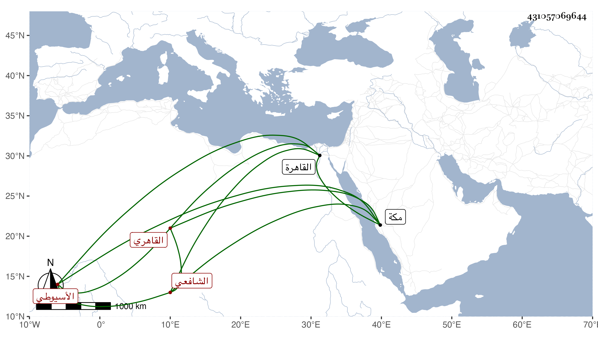

0902Sakhawi.DawLamic.ITO20230111-ara1.EIS1600.431057069644
Biography ID: 431057069644
533
محمد بن أبي الحجاج واسمه يوسف بن محمد بن يوسف الأسيوطي الأصل القاهري الشافعي الآتي أبوه . ولد في ليلة رابع عشر رمضان سنة إحدى وخمسين بالقاهرة ونشأ بها في كنف أبيه فحفظ القرآن وأربعي النووي والبهجة وألفية النحو وغيرها ، وعرض على جماعة وأخذ في النحو عن خلد الوقاد وفي الفقه عن الجوجري وتدرب بأبيه في الصنعة وجلس بباب الحنفي ، وحج مع أبيه شاهد المحمل ، وكان معه في سنة ست وخمسين بمكة وهو صغير فأحضره اليسير بقراءتي ، وهو عاقل كيس .
